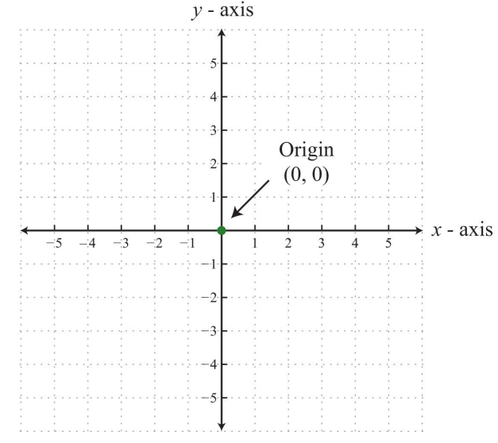
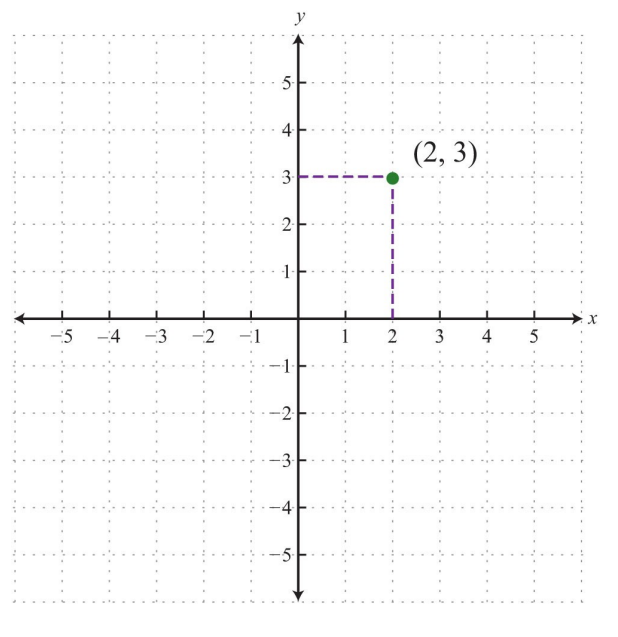

makePlotGrid = function(targets) {
const W = 400, H = 400, PAD = 40;
const GMIN = -6, GMAX = 6, RANGE = GMAX - GMIN;
const GRID = W - 2 * PAD;
const px = x => PAD + (x - GMIN) / RANGE * GRID;
const py = y => PAD + (GMAX - y) / RANGE * GRID;
const toGrid = (mx, my) => [
Math.round((mx - PAD) / GRID * RANGE + GMIN),
Math.round(GMAX - (my - PAD) / GRID * RANGE)
];
let placed = new Map();
let checked = false;
const svg = d3.create("svg")
.attr("width", W).attr("height", H)
.style("cursor", "crosshair")
.style("display", "block");
svg.append("rect").attr("width", W).attr("height", H).attr("fill", "white");
const g = svg.append("g");
function draw() {
g.selectAll("*").remove();
for (let i = GMIN; i <= GMAX; i++) {
const isAxis = i === 0;
g.append("line")
.attr("x1", px(i)).attr("y1", PAD).attr("x2", px(i)).attr("y2", H - PAD)
.attr("stroke", isAxis ? "#555" : "#ddd").attr("stroke-width", isAxis ? 1.5 : 0.5);
g.append("line")
.attr("x1", PAD).attr("y1", py(i)).attr("x2", W - PAD).attr("y2", py(i))
.attr("stroke", isAxis ? "#555" : "#ddd").attr("stroke-width", isAxis ? 1.5 : 0.5);
if (i !== 0) {
g.append("text")
.attr("x", px(i)).attr("y", py(0) + 14)
.attr("text-anchor", "middle").attr("font-size", 10).attr("fill", "#888")
.text(i);
g.append("text")
.attr("x", px(0) - 6).attr("y", py(i) + 4)
.attr("text-anchor", "end").attr("font-size", 10).attr("fill", "#888")
.text(i);
}
}
g.append("text").attr("x", W - PAD + 4).attr("y", py(0) + 4)
.attr("font-size", 13).attr("fill", "#555").text("x");
g.append("text").attr("x", px(0) + 4).attr("y", PAD - 6)
.attr("font-size", 13).attr("fill", "#555").text("y");
for (const [key, {x, y}] of placed) {
const color = !checked ? "#2563eb" : targets.has(key) ? "#16a34a" : "#dc2626";
g.append("circle")
.attr("cx", px(x)).attr("cy", py(y)).attr("r", 6)
.attr("fill", color).attr("stroke", "white").attr("stroke-width", 1.5);
g.append("text")
.attr("x", px(x) + 9).attr("y", py(y) - 5)
.attr("font-size", 11).attr("fill", color)
.text(`(${x}, ${y})`);
}
}
draw();
svg.on("click", function(event) {
const [mx, my] = d3.pointer(event);
if (mx < PAD || mx > W - PAD || my < PAD || my > H - PAD) return;
const [gx, gy] = toGrid(mx, my);
if (gx < GMIN || gx > GMAX || gy < GMIN || gy > GMAX) return;
const key = `${gx},${gy}`;
placed.has(key) ? placed.delete(key) : placed.set(key, {x: gx, y: gy});
draw();
});
const checkBtn = html`<button style="padding:5px 14px;margin:8px 6px 0 0;cursor:pointer">Check</button>`;
const resetBtn = html`<button style="padding:5px 14px;margin:8px 0 0 0;cursor:pointer">Reset</button>`;
const msg = html`<span style="margin-left:10px;font-size:13px"></span>`;
checkBtn.onclick = () => {
checked = true;
const correct = [...placed.keys()].filter(k => targets.has(k)).length;
const wrong = placed.size - correct;
const missed = targets.size - correct;
const allRight = correct === targets.size && wrong === 0;
msg.style.color = allRight ? "#16a34a" : "#dc2626";
msg.textContent = allRight
? `All ${targets.size} points correct!`
: `${correct}/${targets.size} correct — ${wrong} incorrect, ${missed} missed.`;
draw();
};
resetBtn.onclick = () => {
placed.clear();
checked = false;
msg.textContent = "";
draw();
};
const controls = html`<div></div>`;
controls.append(checkBtn, resetBtn, msg);
const container = html`<div style="font-family:sans-serif"></div>`;
container.append(svg.node(), controls);
return container;
}The Coordinate System
Introduction
In this lesson, we are going to study chaos and order. While they intuitively mean the complete opposite of each other, we will find out that there is in fact a very close relationship between the two. Often, if you look closely enough at something apparently chaotic, you may find that there is some order to it after all.
The Coordinate System
TipDefinition
A coordinate system allows us to represent positions of a specified dimension in a reproducible fashion.
This means that if someone describes a position to us using a coordinate system, we can accurately represent that position. For example, the two-dimensional coordinate system allows us to represent points on a flat plane (similar to the page of a book or a white board on a wall).
The system is made up of two axes that are perpendicular (i.e., at 90 degrees) to each other, and which meet at a point referred to as the origin. The position of any point on that plane is described using two values that describe how far away from the origin the given point is along both predefined axes. We typically refer to these axes as \(x\) and \(y\), with the \(x\)-axis oriented horizontally and the \(y\)-axis oriented vertically.
Although this represents a way to locate points in two dimensions, we can extend this to more dimensions. For example, we can add an axis oriented at an angle (technically, you can think of it as being perpendicular to both the \(x\)-and \(y\)-axes and going through the page or the white board). This adds a third dimension to the coordinate system and allows the location of objects in three-dimensional space.
Each axis in a coordinate system has values along it that demarcate one-dimensional positions. Although we have freedom in what those values are, we typically center the origin at the \(x\)-value 0 and the \(y\)-value 0. The origin, then, rests at the point \(\left(0, 0\right)\). The values along an axis typically increase or decrease by 1. Here’s an example of a two-dimensional coordinate system:

When specifying points on the coordinate system, we typically list the \(x\)-component first, followed by the \(y\)-component. That is, the point \((2, 3)\), for example, has an \(x\)-value of 2 and a \(y\)-value of 3. We could plot this point as follows:

ImportantActivity
Can you place these five points in their proper positions on the coordinate system below: (3, 5), (5, -2), (1, 2), (-3, -5), and (-4, 0)?
Click anywhere on the grid to plot a point — it snaps to the nearest integer coordinate. Click a plotted point again to remove it. When finished, click Check to see how you did.
Midpoint
Another benefit of using the coordinate system for describing the position of different points is that it allows us to easily calculate and plot a point in the middle of two points. We call such a point the midpoint of the two points.
If two points were drawn on a plain piece of paper, and we were asked to mark the point in the exact middle of those two points, it would be a long and (many times) inaccurate process. However, having the coordinates of the two points makes this simple.
The midpoint of two points is calculated by adding the corresponding coordinates and dividing by two to find the average of each component. For example, the midpoint of the points \((5, -2)\) and \((1, 2)\) is given by the following coordinates:
\[\left(\frac{5+1}{2}, \frac{-2+2}{2}\right)=\left(3,0\right)\]
That is, the \(x\) and \(y\) components of each point are averaged to find the \(x\) and \(y\) components of the midpoint. Similarly, the midpoint of the points \((-3, -5)\) and \((7, 3)\) is given by the following coordinates:
\[\left(\frac{-3+7}{2}, \frac{-5+3}{2}\right)=\left(2,-1\right)\]
ImportantActivity
Try to calculate the midpoints of the following point combinations in the space below:
Points \((0, 0)\) and \((4, 4)\):
Points \((-3, 5)\) and \((-1, -3)\):
Points \((4, -4)\) and \((-4, -4)\):
Now plot the given points and the calculated midpoints below: